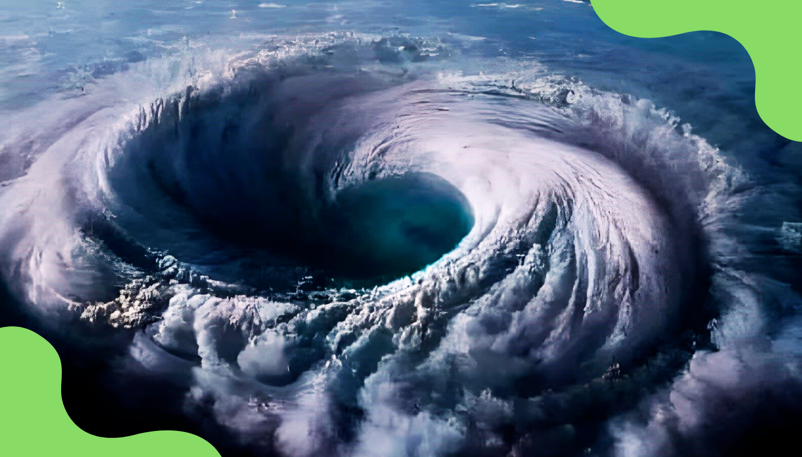

Últimas Notícias
Furacão Milton nos Estados Unidos
O furacão Milton atingiu a Flórida na noite de quarta-feira (9/10), causando enchentes, tornados e destruição generalizada.
Para mais detalhes, confira as fontes abaixo:
Justiça volta a autorizar licença prêvia para asfaltamento da BR-319

A BR-319 é a única estrada que conecta Manaus a Porto Velho e ao restante do país. Segundo estudos, a pavimentação pode afetar cerca de 300 mil km² da Amazônia, uma área maior que o estado de São Paulo. Esse projeto tem gerado bastante debate sobre os impactos ambientais e a sustentabilidade.